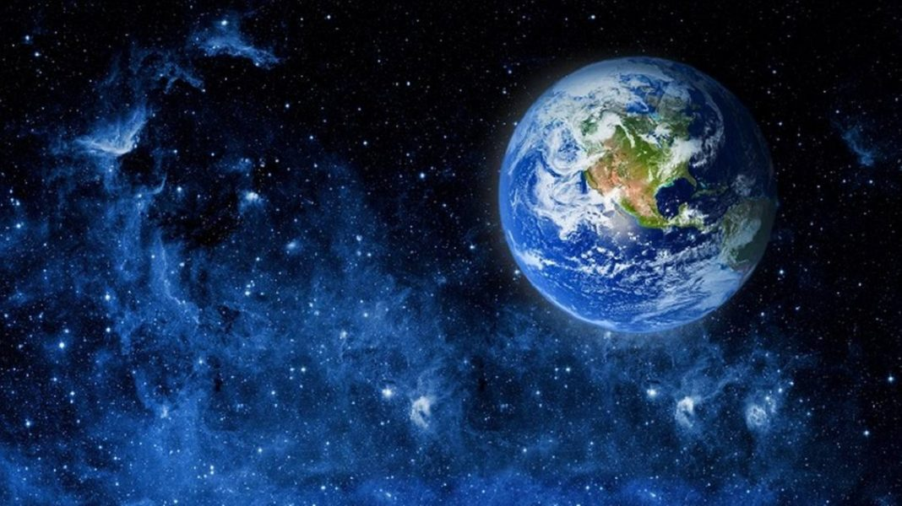

Dia internacional de la madre tierra 22 de abril


- 
Realizado por:
Carlos Alfredo Romero Gonzalez
4"F"
Especialidad:
programacion
Submodulo
Desarrolla Aplicaciones Moviles
Docente
Lic.Jose Antonio Gomez Hernandez
4"F"
programacion
Desarrolla Aplicaciones Moviles
Lic.Jose Antonio Gomez Hernandez
En 1992, más de 178 países firmaron la Agenda 21, la Declaración de Río sobre el Medio Ambiente y el Desarrollo, y la Declaración de Principios para la Gestión Sostenible de los Bosques en la Conferencia de Naciones Unidas sobre el Medio Ambiente y el Desarrollo (UNCED), que tuvo lugar en Río de Janeiro (Brasil) del 3 y el 14 de junio de 1992. En el año 2005, la Asamblea General declaró 2008 como el Año Internacional del Planeta Tierra para promover la enseñanza de las ciencias de la Tierra para facilitar a la humanidad los instrumentos necesarios para el uso sostenible de los recursos naturales y para construir la infraestructura científica esencial para el desarrollo sostenible. En 2012 se celebró la Conferencia de las Naciones Unidas sobre el Desarrollo Sostenible, también conocida como Rio+20. Como resultado, se elaboró un documento que contenía medidas y prácticas para implementar un desarrollo sostenible. Además, en Río, los Estados Miembros decidieron emprender un proceso para establecer los Objetivos de Desarrollo Sostenible (ODS), que se basarían en los Objetivos de Desarrollo del Milenio y coincidirían con la Agenda para el desarrollo después de 2015.
En 1968, Morton Hilbert y el U.S. Public Health Service (Servicio de Salud Pública de E.E.U.U.), organizaron el Simposio de Ecología Humana, se realiza una conferencia por los nombrados anteriormente para una asamblea o conferencia medioambiental para que estudiantes escucharan a científicos hablar sobre los efectos del deterioro ambiental en la salud humana.2 Este fue el primer antecedente del Día de la Tierra. Durante los siguientes dos años, Hilbert y sus estudiantes trabajaron para planear el primer Día de la Tierra.3 Surgieron otros esfuerzos como Survival Project (Proyecto para la Supervivencia), uno de los primeros eventos educacionales de conciencia ambiental, que fue llevado a cabo en la Universidad Northwestern el 23 de enero de 1970. Este fue el primero de varios eventos realizados en campus universitarios por todo Estados Unidos. Así mismo, Ralph Nader empezó a hablar acerca de la importancia de la ecología en 1970.

Hay un hilo muy fino, pero perceptible, que liga a muchas novelas que han usado a Extremadura como trasfondo; histórico, geográfico o sentimental. Un relato de terrenos duros, de supervivencia costosa y gentes (en apariencia) simples y (por fuerza) abnegadas. En realidad, un perfecto ejemplo, hecho de tierra y carne, de una sociedad aún anclada en servidumbres herrumbrosas y miedos atávicos. Lo que nos cuentan los inocentes de Delibes, el Duarte de Cela o las yermas Hurdes sin pan, conformó durante años la semblanza y critica descripción que devino en definición de una zona del país que resultaba, por ajenidad, incomprendida.
Celebramos el Día Internacional de la Madre Tierra para recordar que el planeta y sus ecosistemas nos dan la vida y el sustento. Con este día, asumimos, además, la responsabilidad colectiva, como nos recordaba la Declaración de Río de 1992, de fomentar esta armonía con la naturaleza y la Madre Tierra”, apunta Naciones Unidas a propósito de la fecha que será tomada en cuenta el próximo domingo en todo el mundo. ¿Qué destaca esta declaración de Río que sale a flote cada 22 de abril? El principio uno hace referencia a que los seres humanos constituyen el centro de las preocupaciones relacionadas con el desarrollo sostenible y por tanto tienen derecho a una vida saludable y productiva en armonía con la naturaleza.
La gestión integrada de paisajes requiere comprender los diferentes impactos del uso de la tierra y equilibrar los intereses a menudo contradictorios de los diferentes grupos involucrados. Imaginemos que usted forma parte del gobierno del país X en África subsahariana. Desea cumplir con el Objetivo de Desarrollo Sostenible No. 1 que reza: “acabar con la pobreza en todas sus formas en todas partes". Sin embargo, es consciente de la necesidad de implementar todos los 17 Objetivos, incluido el Objetivo 15, que busca: "Gestionar sosteniblemente los bosques, luchar contra la desertificación, detener e invertir la degradación de las tierras y detener la pérdida de biodiversidad.”